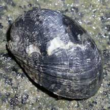
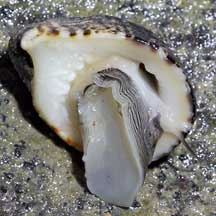
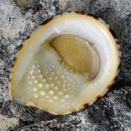
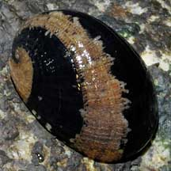
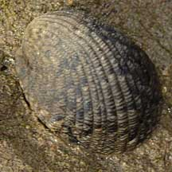
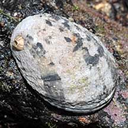
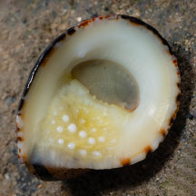

|
|
| shelled snails text index | photo index |
| Phylum Mollusca > Class Gastropoda > Family Neritidae |
| Ox-tongue
nerite snail Nerita albicilla Family Neritidae updated Sep 2020 Where seen? This nerite snail with distinctive 'pimples' on the underside is often seen on many of our rocky shores and granite seawalls. It is usually found nearer the low water mark. The study by Tan & Clements (2008) found this snail on rocks, breakwaters, and seawalls in lower to middle intertidal zone. Sites included: Pulau Ubin, Changi, Tanah Merah, Marina South, Labrador, Sentosa, St. John's Island, Pulau Hantu, Pulau Salu, Raffles Lighthouse and Tuas. Features: 2-3cm. Shell thick heavy, a flattened oval narrower at end and wider at front, spire does not stick out at all. The flat underside is much longer that other nerites, smooth white or yellowish and pimpled with large rounded bumps. These bumps resembles the tongue of an ox (Albicilla means 'ox-tongue'). Small ridged 'teeth' on the straight edge at the shell opening. Larger shells with two rounded 'teeth' on both sides of the shell opening. Operculum thick, evenly covered in tiny bumps, pinkish or yellowish sometimes with darkish portion. Body pale with fine black bands on the foot and long thin black tentacles. |
|
 Sisters Island, Jan 06 |
 Sisters Islands, Jan 06 |
 Pulau Semakau, Feb 09 |
| Many patterns: The shell may be lightly grooved, sometimes glossy. The shell pattern can vary widely from bold spirals to mottled or plain. Some can be white and chalky from exposure and carry barnacles. |
|
 Sentosa, Apr 07 |
 Berlayar Creek, Apr 09 |
 Pulau Jong, Nov 08 |
| Human uses: It is collected as food by coastal dwellers as well as for its shell for the shell trade. |
| Ox-tongue nerite snails on Singapore shores |
On wildsingapore
flickr
|
| Other sightings on Singapore shores |
 |
Links
|